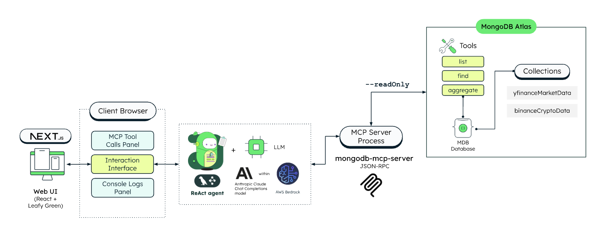

진정한 Agentic AI 구축을 위한
하나의 완벽한 데이터 플랫폼
AWS 환경에서의 성공적인 PoC를 넘어, 놀 유니버스의 대규모 트래픽과 복잡한 사용자 여정을 완벽하게 지원하는 자율형 AI 에이전트를 구현하기 위해서는 데이터 인프라의 통합과 표준화가 필수적입니다. MongoDB Atlas는 그 해답을 제시합니다.
# 몽고디비를 활용한 AgenticAI의 결론만 우선 말씀드리면,
1. 아키텍처 단순화 (Convergence)
관계형 DB, 캐시, 벡터 DB 등 여러 솔루션으로 파편화된 시스템을 하나의 통합된 플랫폼으로 교체하여 유지보수 비용과 복잡성을 혁신적으로 줄이고 데이터 지연 문제를 해결합니다.
2. 실시간 AI 액션 (Event-Driven)
데이터가 생성되거나 변경되는 즉시 AI 에이전트가 이를 감지하고 다음 행동을 트리거하는 이벤트 기반 자율 운영 체계를 구축하여 즉각적인 고객 경험을 제공합니다.
3. 맥락의 영구 보존 (Long-term Memory)
에이전트의 이전 대화, 행동 패턴 및 메모리를 안전하게 저장하고 불러옵니다. LangChain, LangGraph 등 표준 프레임워크와 완벽히 연동되어 단절 없는 AI 서비스가 가능합니다.
MongoDB 기반 Agentic AI 아키텍처
전체적인 데이터 흐름과 AI 에이전트 간의 상호작용을 한눈에 파악할 수 있는 인프라 구성도입니다.

파편화된 아키텍처의 한계를 넘다
기존의 AI 구현은 관계형 DB, 검색 엔진, 벡터 DB 등 여러 시스템을 기워 맞추는 방식으로 이루어져 지연 시간 증가와 관리의 복잡성을 초래했습니다.
⚠️ 기존의 파편화된 데이터 인프라
✨ MongoDB Atlas: 통합 데이터 플랫폼
Single Converged Datastore
에이전트 역량의 극대화
Agentic AI는 단순한 질의응답을 넘어 장기 기억(Long-term Memory)을 바탕으로 자율적인 도구 사용과 다단계 추론을 수행해야 합니다. MongoDB는 이러한 상태 유지(Stateful) 시스템의 근간이 됩니다.
AI 패러다임별 시스템 역량 비교
전통적 챗봇 대비 MongoDB 기반 에이전트의 수행 능력
놀 유니버스 인프라 친화력
표준 프레임워크 및 기존 PoC 자산과의 완벽한 호환성
업계 표준 프레임워크 지원
LangChain, LangGraph의 공식 파트너로서 Agent Memory 관리 및 State Graph 저장을 기본적으로 지원하여 표준화된 개발이 가능합니다.
AWS 에코시스템과의 유연성
AWS 기반의 인프라에서 구동되며, 기존에 테스트하신 Bedrock Agent Core, Strand SDK 등과 마찰 없이 통합되어 모델의 유연한 교체와 내재화 전략을 뒷받침합니다.
대규모 트래픽 대비 안정성
여행/여가 도메인의 특성상 급증하는 트래픽에 대응하기 위한 Sharding을 통해 방대한 스케일에서도 일관된 성능과 엔터프라이즈급 보안을 제공합니다.
Voyage AI 시너지와 한국어/멀티모달 고도화
놀 유니버스가 보유한 방대한 한국어 리뷰 데이터, 숙소 이미지, 유저 행동 로그를 가장 정확하게 이해하고 검색하기 위한 최적의 조합입니다.
로컬라이즈된 최고 수준의 검색 경험
Voyage AI의 강력한 다국어/한국어 벡터링 성능과 멀티모달(텍스트+이미지) 처리 능력을 MongoDB Vector Search와 결합하십시오. 단순 키워드를 넘어 사용자의 의도, 감성, 그리고 시각적 정보까지 포함된 시맨틱 검색이 가능해집니다.
- ✔️ 한국어 자연어 쿼리 의도 파악 극대화
- ✔️ 숙소 이미지와 텍스트 리뷰의 교차 검색
- ✔️ 자체 경량화 LLM 내재화 구축 시 최적의 RAG 저장소
아키텍처 복잡도 대비 한국어 검색 성능 비교 분석
Event-Driven Agentic Architecture
Atlas Stream Processing을 통해 데이터의 변경 사항을 실시간으로 감지하고, 에이전트가 즉각적으로 행동을 개시하도록 아키텍처를 진화시킬 수 있습니다.
(User Input)
컬렉션 Insert/Update
Processing 감지 Aggregation Pipeline
자동 트리거 및 대응
📢 최근 릴리즈: AICC(Callbot) 구축 성공 사례
놀 유니버스에서 계획 중인 콜봇(AI Contact Center) 구축과 관련하여, 가장 최근에 릴리즈된 LG유플러스의 성공 사례를 확인해 보실 수 있습니다.
LG유플러스 x MongoDB: AI 서비스 확장 및 아키텍처 현대화 사례 보기 ➔